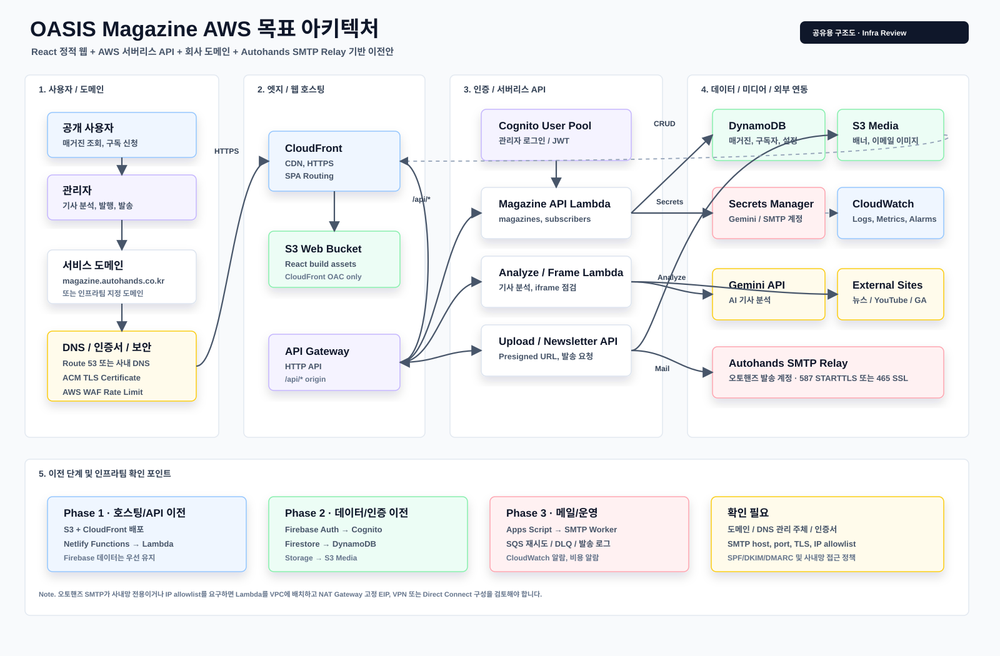

OASIS Magazine AWS 목표 아키텍처
회사 도메인, CloudFront/S3, API Gateway/Lambda, Cognito, DynamoDB, S3 Media, SQS, Autohands SMTP Relay 기준 공유용 구조도입니다.
Infra Review

도메인
서비스 도메인은 `magazine.autohands.co.kr` 같은 회사 서브도메인을 사용하고 DNS는 Route 53 또는 기존 사내 DNS에서 CloudFront로 연결합니다.
메일
뉴스레터는 SES가 아니라 Lambda worker가 오토핸즈 SMTP Relay로 발송하는 구조입니다. SMTP 계정은 Secrets Manager에 저장합니다.
이전 방식
1차는 호스팅/API부터 옮기고, 2차에서 Firebase Auth/Firestore/Storage를 Cognito/DynamoDB/S3로 전환합니다.